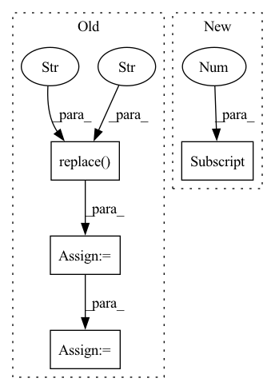

Pattern ID :16107
Before Change
d = id2sent[ins["id"]]
d["relations"] = list(map(lambda x: id2rel[x], rels))
for word in ["head", "tail"]:
d[word] = d[word].replace(" " , "" )
d["text"] = d["text"].replace(" ", "")
positions = rtp.find_all_positions(d["text"], d[word])
if len(positions) == 0:
print("warn! data skipped", d)After Change
if len(positions) == 0:
print("warn! data skipped", d)
continue
d["entities"].append(["PER", *positions[0] ]) // only take the first occurrence
rels = list(set(map(int, ins["relations"].split())))
d["relations"]= [[id2rel[rel], 0, 1] for rel in rels]
final_data.append(d)In pattern: SUPERPATTERN
Frequency: 3
Non-data size: 4
Instances Fragment ID: 54021368
Project Name: spico197/rex
Commit Name: 6c064639242c6f66893a4319081b7339ff6a43da
Time: 2021-05-06
Author: spico1026@gmail.com
File Name: data/IPRE/convert.py
M Class Name: AnonimousClass
N Class Name: AnonimousClass
M Method Name: convert_data(3)
N Method Name: convert_data(3)
M Parent Class:
N Parent Class:
M File Name: data/IPRE/convert.py
N File Name: data/IPRE/convert.py
M Start Line: 10
M End Line: 38
N Start Line: 10
N End Line: 44
Before Change
else:
ic = pred_label.groupby(level="datetime").apply(lambda x: x["label"].corr(x["score"]))
_index = ic.index.get_level_values(0).astype("str").str.replace("-" , "" ) .str.slice(0, 6)
_monthly_ic = ic.groupby(_index).mean()
_monthly_ic.index = pd.MultiIndex.from_arrays(
[_monthly_ic.index.str.slice(0, 4), _monthly_ic.index.str.slice(4, 6)],
names=["year", "month"],After Change
],
axis=1,
)
_ic = ic_df.iloc(axis=1)[0]
_index = _ic.index.get_level_values(0).astype("str").str.replace("-", "").str.slice(0, 6)
_monthly_ic = _ic.groupby(_index).mean()
_monthly_ic.index = pd.MultiIndex.from_arrays( Fragment ID: 54021372
Project Name: microsoft/qlib
Commit Name: 2f5ce3dc01e6209520bd0d9bda52ed6d0188398e
Time: 2022-12-30
Author: qianyun210603@hotmail.com
File Name: qlib/contrib/report/analysis_model/analysis_model_performance.py
M Class Name: AnonimousClass
N Class Name: AnonimousClass
M Method Name: _pred_ic(2)
N Method Name: _pred_ic(2)
M Parent Class:
N Parent Class:
M File Name: qlib/contrib/report/analysis_model/analysis_model_performance.py
N File Name: qlib/contrib/report/analysis_model/analysis_model_performance.py
M Start Line: 113
M End Line: 161
N Start Line: 120
N End Line: 187
Before Change
def get_official_weights(self, **kwargs) -> OrderedDict[str, torch.Tensor]:
// TODO: map_location argument
file_name = self.name.upper().replace("BIT" , "BiT" ) .replace("X", "x")
if isinstance(self.dataset, ImageNet):
file_name += "-ILSVRC2012"
file_name += ".npz"
url = f"https://storage.googleapis.com/bit_models/{file_name}"
print("get official model weights from: ", url)
file_path = os.path.join(torch.hub.get_dir(), "bit", file_name)After Change
def get_official_weights(self, **kwargs) -> OrderedDict[str, torch.Tensor]:
// TODO: map_location argument
assert "official" in self.name and "comp" not in self.name, self.name
model_name = self.name.split("_")[0] .upper().replace("BIT", "BiT").replace("X", "x")
if isinstance(self.dataset, ImageNet):
model_name += "-ILSVRC2012"
url = f"https://storage.googleapis.com/bit_models/{model_name}.npz" Fragment ID: 54021373
Project Name: ain-soph/trojanzoo
Commit Name: 96331dcace5be2d405ccb32ac4b2ca5c7d028e0a
Time: 2021-04-30
Author: ain-soph@live.com
File Name: trojanvision/models/normal/bit.py
M Class Name: BiT
N Class Name: BiT
M Method Name: get_official_weights(1)
N Method Name: get_official_weights(1)
M Parent Class: ImageModel
N Parent Class: ImageModel
M File Name: trojanvision/models/normal/bit.py
N File Name: trojanvision/models/normal/bit.py
M Start Line: 70
M End Line: 76
N Start Line: 89
N End Line: 95